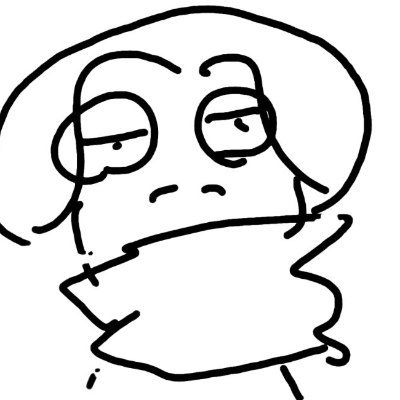

MPMeta Puppet
自分自身を、自分自身で操作する。
カメラで撮影した自分の姿をリアルタイムに切り出し、VRの中で自分自身を操り人形のように操作する体験作品。撮影・伝送・推論・描画のすべてを自前で実装している。
Team

Anji Fujiwara Kosuke Shimizu
Kosuke Shimizu
MetaPuppet
Credits
カメラで撮影した自分の姿をリアルタイムに切り出し、VRの中で自分自身を操り人形のように操作する体験作品。撮影・伝送・推論・描画のすべてを自前で実装している。

Anji Fujiwara
Kosuke Shimizu